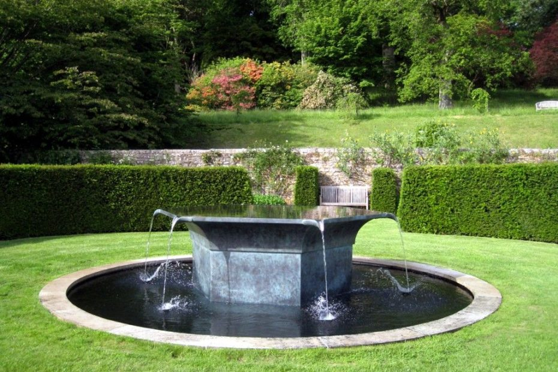

تصميم الشلالات والنوافير الصناعية بالرياض

خدمة تصميم الشلالات والنوافير الصناعية: إضافة الجمال والسحر إلى المساحات الخارجية
الشلالات والنوافير الصناعية تعتبر أحد العناصر المثيرة والجميلة التي تضفي جوًا ساحرًا وهادئًا على المساحات الخارجية. إن تدفق الماء والأصوات الهادئة للشلالات والنوافير تعزز الجمال الطبيعي للبيئة وتخلق أجواءًا مريحة ومنعشة. وهنا تأتي خدمة تصميم الشلالات والنوافير الصناعية التي تقدمها شركة كوكب الزهور لتحقيق هذا الهدف.
-
جمال بصري فريد: تعتبر الشلالات والنوافير الصناعية عنصرًا جماليًا مدهشًا يلفت الأنظار ويضفي لمسة فريدة على المساحات الخارجية. تقوم شركة كوكب الزهور بتصميم شلالات ونوافير مبتكرة وجذابة، تتناسب مع البيئة المحيطة وتلبي توقعات العملاء. سواء كانت تصميمات هادئة ورقيقة أو تصميمات ذات طابع هندسي وعصري، ستتمكن الشركة من إنشاء شلالات ونوافير تلبي رؤية العملاء.
-
أجواء هادئة ومنعشة: يعمل صوت الماء المتدفق وحركته الهادئة على إحداث تأثير مريح ومنعش للبيئة المحيطة. تعمل الشلالات والنوافير الصناعية على تهدئة الأعصاب وخلق جو من الاسترخاء والهدوء. إضافة شلال أو نافورة إلى فناء المنزل أو حديقة يمكن أن يكون ملاذًا هادئًا يساعد في التخلص من التوتر والضغوط اليومية
-
ترطيب البيئة: يعد توفير رطوبة للمساحات الخارجية أمرًا هامًا، خاصة في المناطق ذات الطقس الجاف. تساعد الشلالات والنوافير الصناعية على زيادة مستوى الرطوبة وتحسين جودة الهواء المحيط. يمكن أيضًا أن تؤثر الرطوبة الإضافية بشكل إيجابي على النباتات والأشجار المحيطة وتساعدها على النمو والازدهار
-
عنصر ديكور مذهل: تعد الشلالات والنوافير الصناعيةعنصر ديكور مذهل يمكن أن يعزز جمالية المساحات الخارجية. يمكن تصميم الشلالات والنوافير بأشكال وأحجام مختلفة لتناسب متطلبات المساحة والذوق الشخصي. سواء كانت شلالات ذات طبقات متعددة تتدفق بشكل جميل أو نوافير تعمل بنظام إضاءة ملونة تضفي لمسة سحرية في الليل، ستتمكن شركة كوكب الزهور من تصميم وتنفيذ الشلالات والنوافير التي تعكس أفضل جوانب الجمال والفخامة
-
قيمة إضافية للعقارات: تعتبر الشلالات والنوافير الصناعية استثمارًا رائعًا لتحسين قيمة العقارات. فإضافة عنصر مثل الشلالات والنوافير يمكن أن يعزز جاذبية المنزل أو الملكية التجارية ويجذب المزيد من الاهتمام من المشترين المحتملين. بالإضافة إلى ذلك، يعتبر وجود شلال أو نافورة في الحديقة أو الفناء ميزة إضافية تتيح للسكان الاستمتاع بالجمال الطبيعي والراحة في بيئتهم الخارجية.
استنتاج:
خدمة تصميم الشلالات والنوافير الصناعية المقدمة من شركة كوكب الزهور تعد استثمارًا فريدًا لإضافة الجمال والسحر إلى المساحات الخارجية. تعمل الشلالات والنوافير على تحسين جاذبية البيئة المحيطة وتوفير أجواء هادئة ومنعشة. بفضل التصاميم المبتكرة والجودة العالية، يمكن لشركة كوكب الزهور تحقيق رؤية العملاء وتجسيد الجمال الطبيعي في مناطقهم الخارجية. إذا كنت تسعى لتحويل مساحتك الخارجية إلى قطعة فنية رائعة، فلا تتردد في التعاون مع شركة كوكب الزهور للاستفادة من خدمة تصميم الشلالات والنوافير الصناعية الاحترافية والمتميزة
تصميم الشلالات والنوافير الصناعية بالرياض
-
استشارة وتقييم الموقع: تبدأ عملية التصميم بجلسة استشارية مع فريق شركة كوكب الزهور لفهم رؤية العميل ومتطلباته. يتم تقييم الموقع المراد تصميم الشلال أو النافورة فيه، بما في ذلك الحجم والشكل والمساحة المتاحة والبيئة المحيطة. يتم أيضًا دراسة المصادر المتاحة للماء والتوصل إلى المتطلبات الفنية والمالية للمشروع.
-
استخدام الخامات العالية الجودة: نتعامل مع مصانع متخصصة تنتج الديكورات الحجرية بجودة عالية
وبملمس آمن ومتين. نضمن أن الديكورات الحجرية تحتفظ بجمالها ولونها لفترة طويلة.
-
تركيب دقيق: نقوم بتركيب الديكورات الحجرية بدقة واحترافية. نهتم بالتفاصيل ونضمن توزيع متساوٍ
وتثبيت صحيح
-
تنسيق مع البيئة الخضراء: نحن نأخذ في اعتبارنا الحدائق والمساحات الخضراء المحيطة عند تصميم
وتركيب الديكورات الحجرية. نسعى لتحقيق التكامل بين العناصر والطبيعة.
الديكورات الحجرية: لمسة عراقة وأناقة من شركة كوكب الزهور
تعتبر الديكورات الحجرية من أقدم وأجمل العناصر المستخدمة في التصميم الداخلي والخارجي، وهي تضفي
على المكان طابعًا يجمع بين الصلابة والجمال. شركة “كوكب الزهور” تقدم لعملائها تصاميم ديكورات
حجرية تناسب مختلف الأذواق والمساحات، مع الحفاظ على الجودة والدقة في التنفيذ.
الجدران الحجرية: قوة التحمل والجمال
تتميز الجدران الحجرية بقوتها ومقاومتها للعوامل الطبيعية، وتعطي شعورًا بالدفء والأصالة. في “كوكب
الزهور”، نستخدم أحجارًا طبيعية وصناعية عالية الجودة لخلق جدران حجرية تتماشى مع الطراز المعماري
للمبنى وتلبي رغبات العملاء.
الأرضيات الحجرية لا تقدم فقط متانة عالية، بل تضيف أيضًا لمسة من الفخامة والرقي. “كوكب الزهور”
توفر مجموعة متنوعة من الأحجار مثل الرخام والجرانيت والحجر الجيري، والتي يمكن تشكيلها بأشكال
وأنماط مختلفة لتناسب كل مساحة.
لماذا تختار كوكب الزهور؟
-
خبرة واحترافية: نحن متخصصون في تنسيق الحدائق وتصميم الديكورات الحجرية منذ سنوات.
-
أسعار مناسبة: نقدم أسعارًا تنافسية مع الحفاظ على جودة الخدمة.
-
تصميم مخصص: نفهم أن كل حديقة فريدة، ولذلك نقدم تصميمًا مخصصًا يلبي احتياجات العميل.
فلنجعل حدائقك تتألق بجمالها وتكون مكانًا مثاليًا للاستمتاع بالهواء الطلق والطبيعة. اتصل بنا